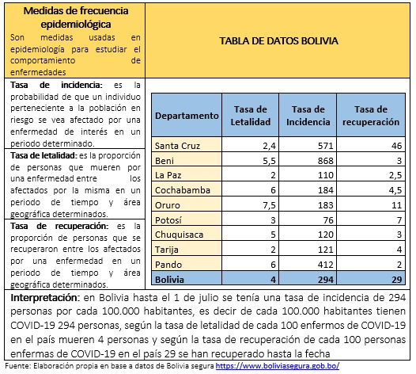

La baja tasa de recuperación de Covid-19 en bolivia
como resultado de una mala gestión

Resumen
El avance de la pandemia en el mundo es inminente, hasta el 30 de junio se sumaban más de 10.2 millones de casos confirmados, más de 500 mil decesos, y más de 5.2 millones de habitantes recuperados.
El avance de la pandemia en el mundo es inminente, hasta el 30 de junio se sumaban más de 10.2 millones de casos confirmados, más de 500 mil decesos, y más de 5.2 millones de habitantes recuperados.
Estas cifras van cobrando un peso cada vez mayor para nosotros, pues a partir de mayo el epicentro de la pandemia se ha trasladado al continente americano, lugar donde se concentra la mayor cantidad de casos y decesos respectivamente. Entre los países que concentran el mayor porcentaje de casos se encuentra E.E.U.U. y Brasil, sin embargo estos países también cuentan con un porcentaje alto de recuperación. Así mismo, debemos resaltar que Cuba tiene un total de 93% de tasa de recuperación, siendo un país con características demográficas semejantes a las de Bolivia. En nuestro país, la relación entre el porcentaje de casos y porcentaje de recuperados muestra un panorama desalentador, pues la tasa de recuperación se encuentra muy por debajo de varios países de la región. Haciendo un análisis de los factores que inciden en esta diferencia en la taza de recuperación, podemos señalar que la misma se debe una gestión ineficiente de la pandemia en Bolivia, y de continuar así, se cobrará la vida de más habitantes.
Fuente: Elaboración propia en base a datos, OMS, JHU
Según el comportamiento del COVID-19 en Bolivia hasta el primero de julio, se observan los siguientes datos: casos confirmados 32.125, decesos 1071 y población recuperada 8.928. Estas cifras se traducen en una tasa de incidencia de 264 personas de cada 100.000 habitantes infectados con COVID-19, una tasa de letalidad de 3.3 de cada 100 personas enfermas y 28 personas recuperadas de cada 100 personas, hasta la fecha.
Para ejemplificar mejor esta información se explica lo siguiente:
 Fuente: Elaboración propia en base a datos de Bolivia segura
Los factores que inciden de manera directa en la baja tasa de recuperación en nuestro país, tienen que ver con cuatros aspectos de la gestión de la pandemia: 1. La limitada capacidad de testeos a nivel nacional, 2. La falta de seguimiento, acompañamiento y fiscalización del ente rector (Ministerio de salud), 3. La falta de coordinación en el manejo de la pandemia en los niveles nacional, departamental y municipal y 4. La ausencia de un enfoque científico para el tratamiento del COVID-19.
- La limitada capacidad de testeos a nivel nacional: Bolivia tiene una capacidad limitada de testeos en los laboratorios de referencia nacional (INLASA y CENETROP), incluyendo a la Caja Nacional de Salud. Se tiene una mora en los procesamientos de las muestras de 5 a 7 días, es decir las capacidades laboratoriales están colapsadas, y en algunos casos las personas enfermas no han tenido acceso a una muestra que pueda verificar si su diagnóstico es positivo o no. Por ejemplo, a través de una información directa se sabe de un caso de una persona de la tercera edad del municipio de Caracollo que tuvo contacto estrecho con una paciente fallecida por COVID-19. Fue identificada como caso sospechoso después de una semana, y pasaron seis días más para la realización de la prueba de Covid- 19, y a la fecha aún se desconoce el resultado. Y como este, existen bastantes casos que develan la lentitud en los procedimientos de detección, proceso fundamental para la contención de la enfermedad.
- La falta de seguimiento, acompañamiento y fiscalización del ente rector (Ministerio de salud): El rol de esta Máxima Autoridad Estatal MAE en Salud se ha reducido a lo largo de la pandemia a contabilizar y dar a conocer al país el número de casos confirmados, decesos y recuperados de personas con Covid-19, dejando de lado el seguimiento, acompañamiento y fiscalización del manejo de la pandemia. Este vacío es cada vez más evidente, cuando observamos que los gobiernos departamentales y municipales se encuentran dejados a su suerte en el manejo de esta pandemia. No se ha conformado un comité científico que otorgue lineamientos sobre los tratamientos a seguir en el manejo de la enfermedad, ni se han realizado protocolos técnicos para que el personal del sistema sanitario enfrente la pandemia de manera eficiente.
- La falta de coordinación en el manejo de la pandemia en los niveles nacional, departamental y municipal: Aunque los gobiernos departamentales y municipales gozan de cierta autonomía, la declaratoria de emergencia nacional activa el funcionamiento del Comité de Operaciones de Emergencia Nacional COEN, con el objetivo de contar con una estructura de coordinación y cooperación de los diferentes niveles del Estado y entidades de la sociedad civil. Sin embargo, esta coordinación no se ha realizado de manera eficiente, pues podemos observar que las gobernaciones y municipios, van enfrentando la pandemia a través de esfuerzos individuales y en extremo particulares (medidas y tratamientos disimiles de la enfermedad). Así mismo, debemos recordar que el Ministerio de Salud intervino varios SEDES, y en consecuencia, se cambiaron a las autoridades de manera arbitraria. Por ejemplo el SEDES La Paz cambio de autoridad en cinco oportunidades en tan solo tres meses, generando zozobra en el personal de salud de su dependencia y de la población en general.
- La ausencia de un enfoque científico para el tratamiento del COVID-19: Cuando se comenzó la cuarentena dinámica en el país, el nivel central del Estado, delegó la responsabilidad del manejo de la pandemia a las gobernaciones y municipios del país. En ese sentido, el SEDES Chuquisaca determinó distribuir un paquete de medicamentos a las personas con COVID-19, que consta de Ivermectina, dióxido de cloro y otras pastillas (con un costo de más de 500 Bs por persona). Los criterios para la selección de este paquete no están claros, por lo cual van surgiendo las siguientes cuestionantes: ¿Qué criterios médicos abalan el uso de la combinación de Ivermectina y dióxido de cloro para el tratamiento del Covid- 19? ¿Cuáles son las entidades pertinentes en nuestro país, para otorgar lineamientos en cuanto al tratamiento del Covid-19? El caso del SEDES Chuquisaca es solo un ejemplo de que las gobernaciones y municipios, están tomando acciones en el total abandono del gobierno central.
Ante estas cuatro condiciones del manejo de la pandemia, podemos señalar que la baja tasa de recuperación en Bolivia se debe principalmente a la mala gestión de la crisis sanitaria por parte del gobierno central. Sin embargo, esta baja tasa de recuperación de la enfermedad es tan solo uno de los efectos de la negligencia de la gestión del actual gobierno, otro efecto significativo es la contracción del Estado para la población boliviana. La negligencia del gobierno transitorio en el manejo de la pandemia no es casual, aporta en la agudización de una crisis económica que genera el escenario perfecto para el avance del mercado mundial, a través de medidas neoliberales como el endeudamiento.